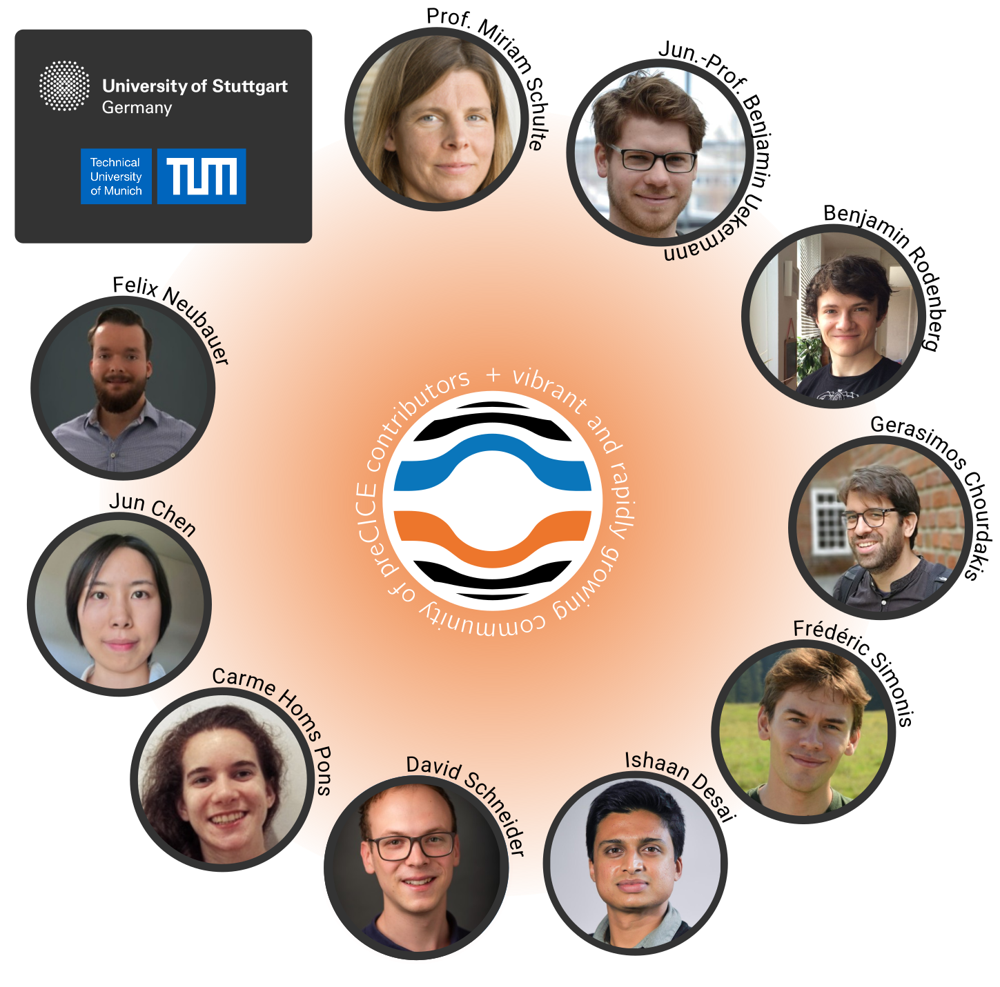

Development
preCICE is developed in the groups of Benjamin Uekermann (Usability and Sustainability of Simulation Software) and Miriam Schulte (Simulation of Large Systems) at the University of Stuttgart and in the group of Hans-Joachim Bungartz (Scientific Computing in Computer Science) at the Technical University of Munich.

For the full list of contributors to preCICE please see our community page.
The conceptual ideas of preCICE are not completely new. preCICE is an advancement of FSI*ce, developed by Markus Brenk.
Planning and development of precice.org
The website in its current form was planned and implemented by CH Lorenz Research and Innovation Consulting together with the preCICE team. For more information contact Christopher Lorenz at christopher[dot]lorenz[at]chlorenz[dot]ug.
Funding


EXC 2075 SimTech

This project has received funding from the European Union’s Horizon 2020 research and innovation programme under the Marie Skłodowska-Curie grant agreement No 754462
Prince XML
We use a non-commercial license of Prince XML to generate the PDF version of the documentation. For more information see our meta documentation page.
Impressum
This website is maintained by
Benjamin Uekermann - Universität Stuttgart - Universitätsstraße 38 - 70569 Stuttgart
Privacy
You can find the preCICE privacy policy here.

preCICE is tasty because it is made with love by its contributors.